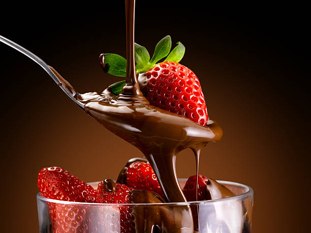
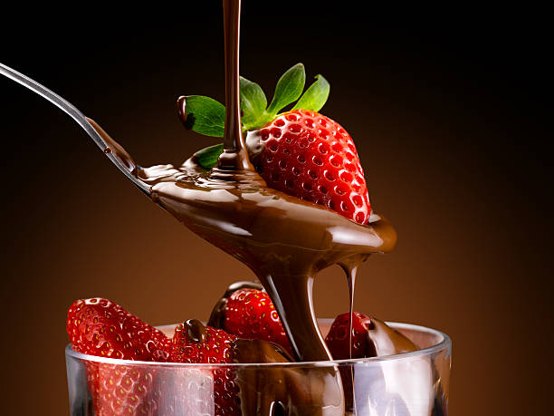

BerryLush is a signature dessert under the Cold Craving brand, crafted to offer a perfect blend of freshness, indulgence, and visual appeal. Prepared using fresh, hand-selected strawberries, BerryLush highlights the natural sweetness and slight tang of the fruit, which is enhanced by a generous coating of smooth, premium chocolate. Each serving is made fresh, ensuring high quality, rich flavour, and an irresistible aroma that attracts customers instantly. The contrast between the juicy strawberries and the silky chocolate creates a balanced and satisfying dessert that feels luxurious yet comforting.
BerryLush is ideal as a quick sweet craving, a post-meal treat, or a sharing dessert, making it suitable for customers of all age groups. Its attractive presentation, rich taste profile, and indulgent texture position BerryLush as a standout product of Cold Craving, helping the brand create a strong identity centred on freshness, quality, and joyful dessert experiences.
 
